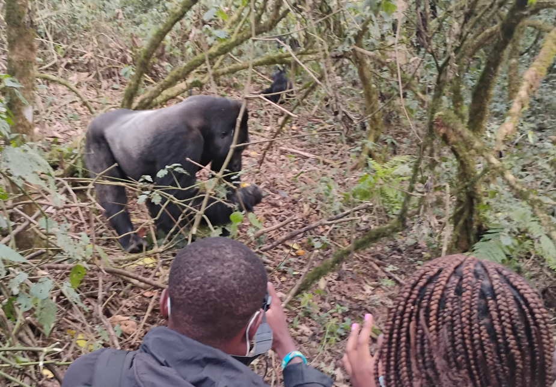
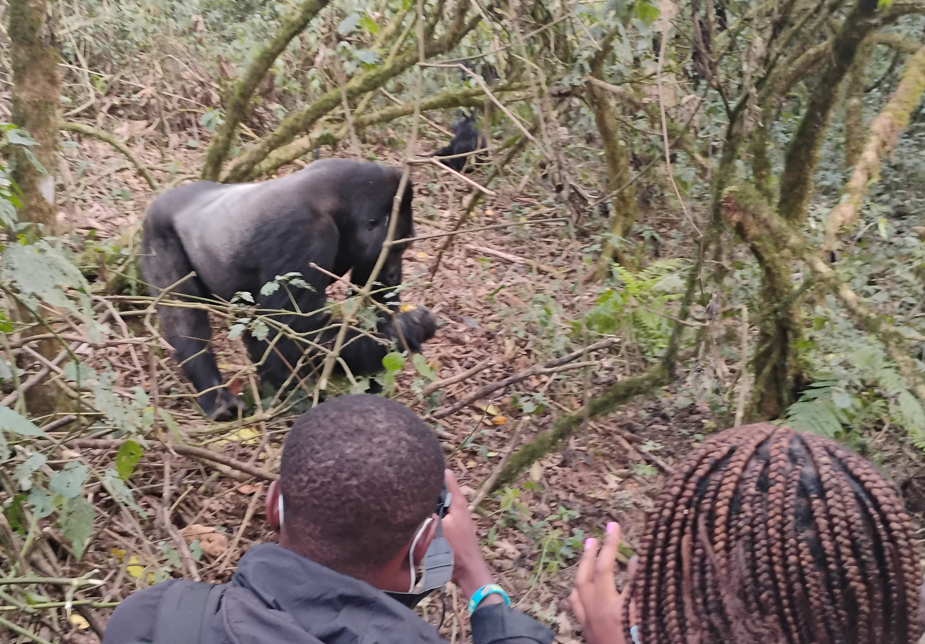
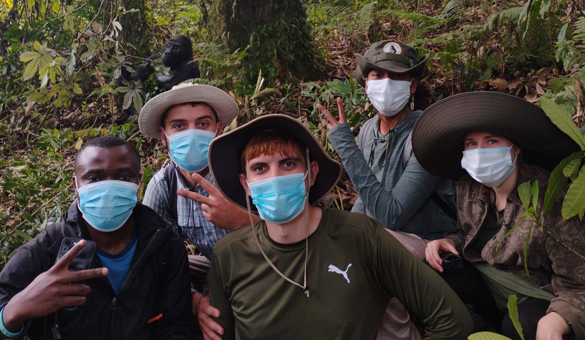
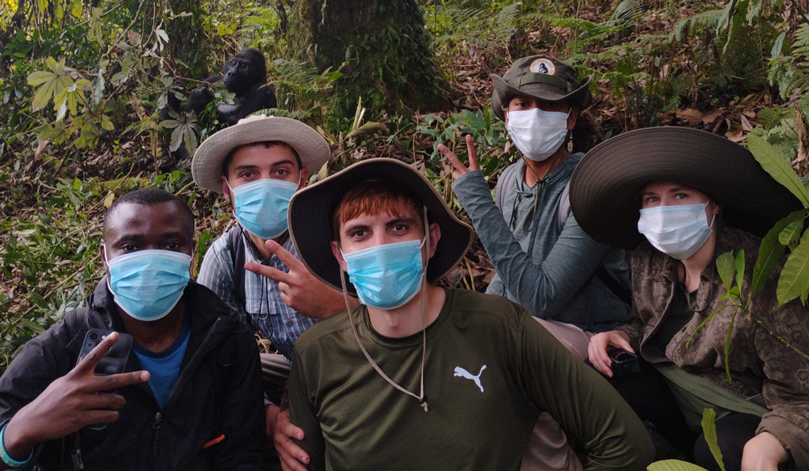
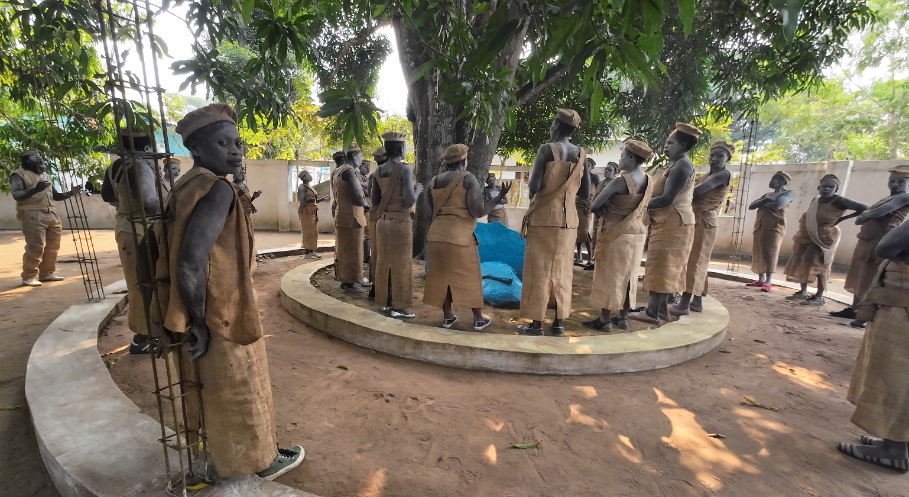
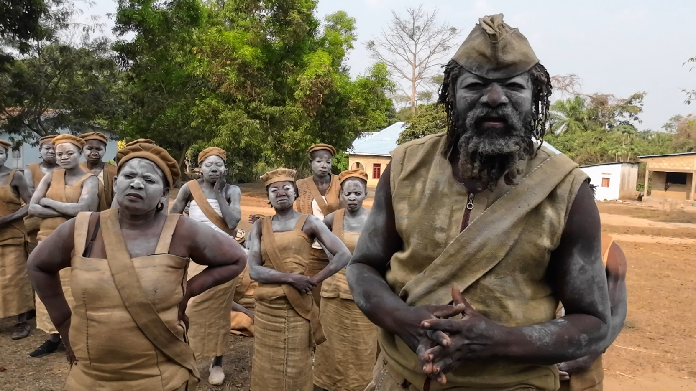
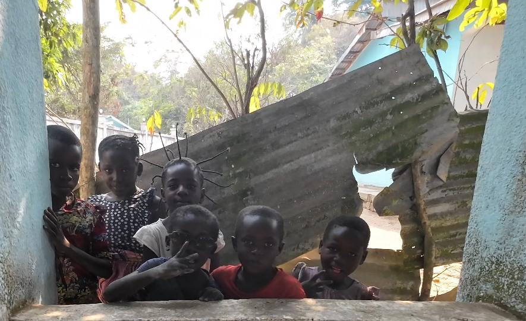

Congo
While in the Democratic Republic of the Congo, I visited a region where I observed western lowland gorillas in their natural environment. These gorillas, native to the lowland tropical forests of Central Africa, are less territorial than mountain gorillas, and it's possible to make eye contact with them without triggering defensive behavior. Ecotourism efforts in the area help support conservation initiatives while providing income to local communities.

Our gorilla trek guide, Lambert, with a fruit that the gorillas like to eat.
 

 

A group photo at the end of the trek.
I also visited Zongo Falls, a large waterfall on the Inkisi River located near Kinshasa. The falls are a notable natural landmark and attract both domestic tourists and researchers interested in hydrology and regional ecology.
I met members of Tata Gonda, a religious sect rooted in traditional Kongo spiritual beliefs. The group blends indigenous cosmology with Christian elements and plays an active role in the spiritual and cultural life of some local communities. Meeting them offered insight into how local religious traditions continue to evolve and adapt while preserving core ancestral values.
  I also swam in the Congo River, which spans over 4,700 kilometers. It has been historically significant as a major trade route and is one of the deepest and most powerful rivers in the world.